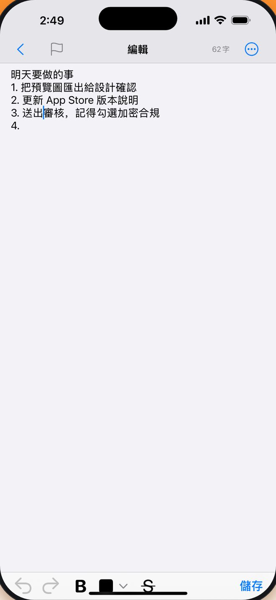
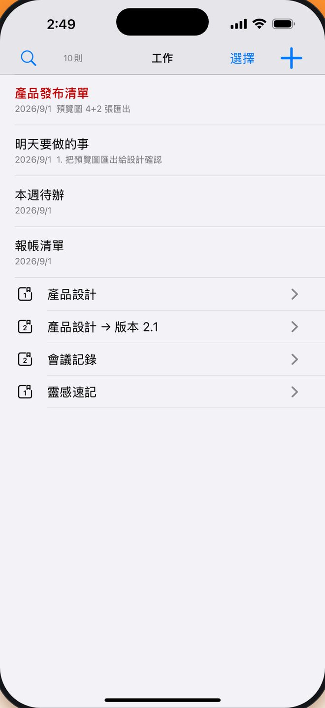
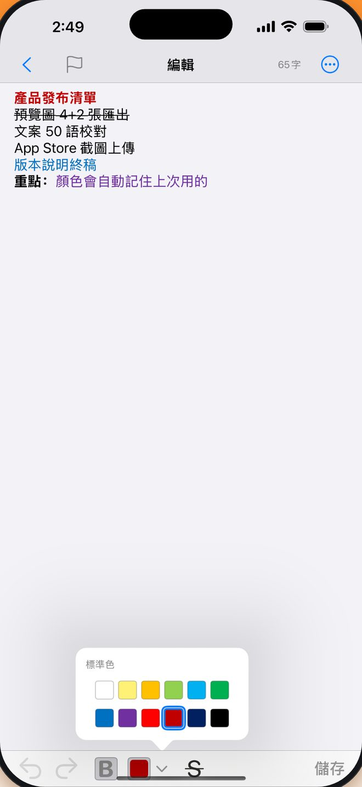
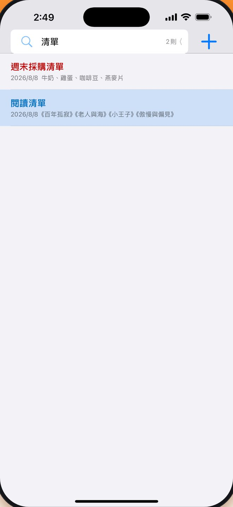
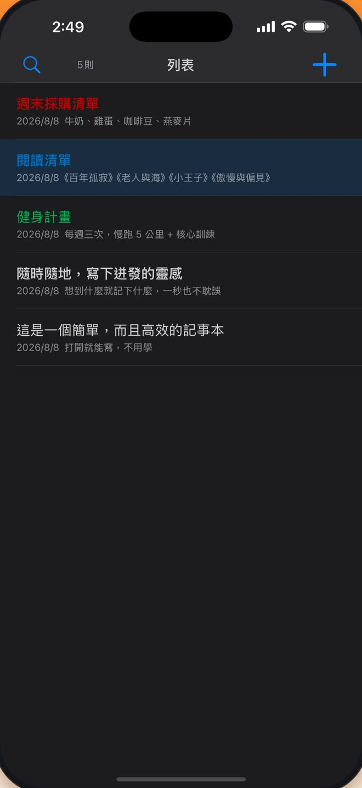
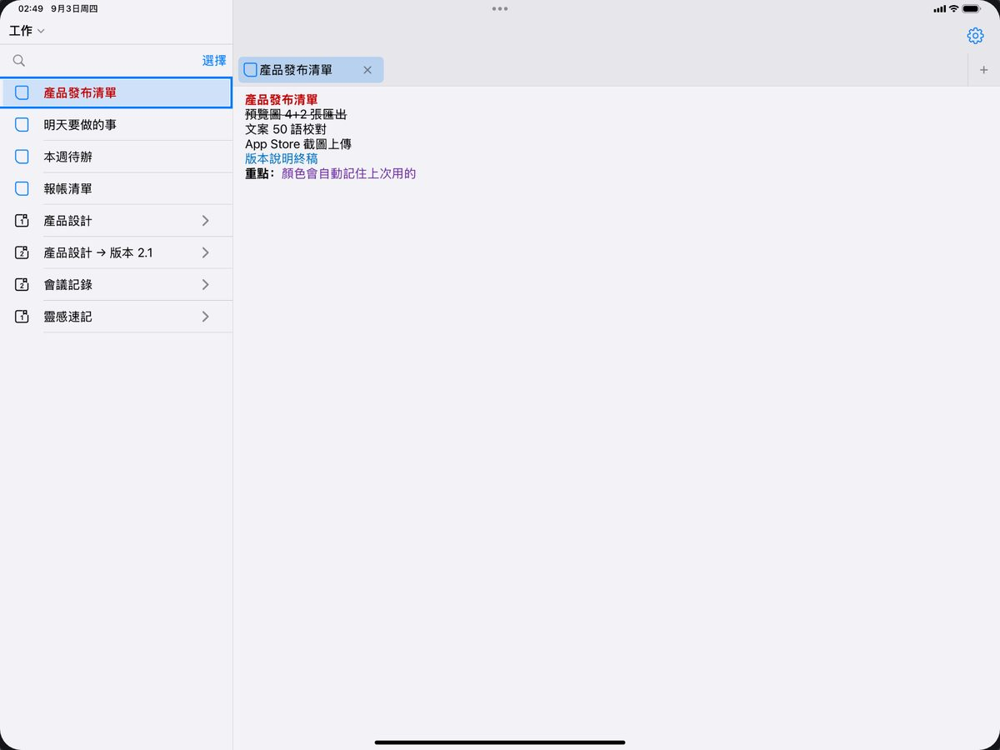

免費
沒有付費方案，寫筆記會用到的功能全都包含在內。
免費 · iPhone 與 iPad · 50 種語言
如果你在尋找一款「打開即寫、隨時整理、安全無憂」的筆記 App，極簡筆記就是為你量身打造的。
分享
一覽
沒有付費方案，寫筆記會用到的功能全都包含在內。
一個通用 App，需 iOS 16.0 或以上版本。
跟隨系統語言，也可以在設定裡單獨指定一種。
存在本機資料庫，寫入磁碟時加密，筆記內容不會上傳。
粗體與刪除線也在編輯工具列上，打字時隨手就能用。
筆記本 → 群組 → 筆記，想分多深就分多深。
哪怕突然接聽電話、應用意外中斷或手機耗盡關機，未儲存的內容都會自動幫你找回。無需頻繁尋找儲存按鈕，記錄過程更從容。

支援「筆記本 → 分組 → 筆記」多層管理，滿足複雜的整理需求；同時也支援無分類隨手記，自由隨心。

富文本編輯器提供粗體、刪除線以及 12 色預設調色盤，並能自動記憶上次使用的顏色，免去重複設定。標題同步繼承內文的格式屬性，讓清單預覽更加清晰直觀。
12 色 · 粗體 · 刪除線
編輯器會記住你上次用過的顏色，下一則筆記接著用，不必重設一次。

輸入關鍵字，筆記即時篩選

跟隨系統自動切換，護眼不費神

iPad
左邊是筆記列表，右邊是編輯區和歷史標籤，瀏覽和編輯互不打擾。接上鍵盤，整個 App 都能用鍵盤操作。

⌘N 新增、⌘1–9 切分頁、⌃Tab 回側邊欄
外接鍵盤快速鍵
常見問題
是。下載和使用都不收費，寫筆記相關的功能也沒有需要付費解鎖的部分。
不會。編輯時草稿會持續存到裝置上，重新打開就自動找回，連游標停在哪一行都記得。
不需要。沒有註冊也沒有登入，打開 App 點一下就能寫下第一則。
iPhone 與 iPad，系統需要 iOS 16.0 或以上版本。
存在你自己的裝置上，寫入磁碟時加密。筆記內容不會上傳到伺服器。
可以。在 Safari 或別的 App 裡點「分享」，選擇極簡筆記，連結或文字就會進收件匣並產生一則新筆記。